Downloader design
Infrastructure for downloading headers, block bodies, and receipts that was inherited from go-ethereum does not integrate well with the concept of Staged Sync in Erigon. The code for this infrastructure is mostly contained in eth/downloader package. We would like
to replace it with more minimalistic infrastructure that fits better into "Staged Sync" concept with more judicious use of concurrency and
greater control over database objects, such as transactions.
Current code
Code for the new downloader process is split between packages cmd/headers/download, turbo/stages, turbo/stages/headerdownload, /turbo/stages/bodydownload.
High-level idea about header download
Header downloader process (represented by the type headerdownload.HeaderDownload) maintains data structure containing the collection of "chain bundles". Each chain bundle consists of one anchor and some chain links. Each link corresponds to a block header. Links are connected to each other by ParentHash fields. If ParentHash of some links do not point to another link in the same bundle, they all must point to the anchor of this bundle. Here is graphic representation of chain bundle:
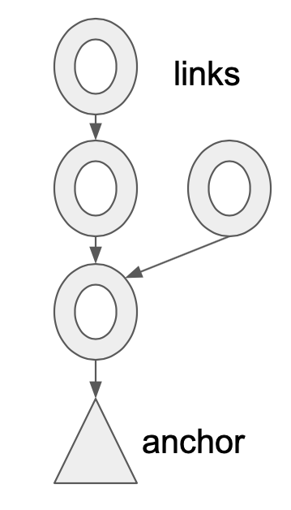
And this is an example of multiple links pointing to the same anchor:
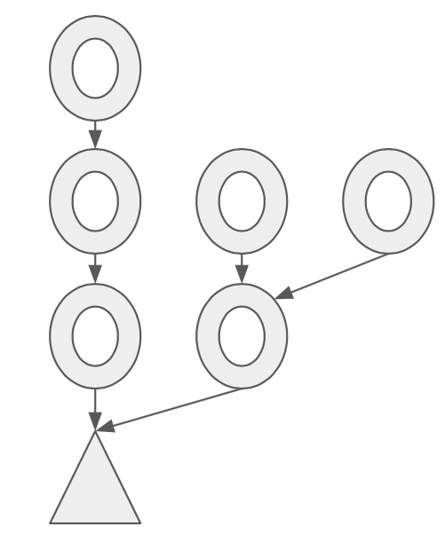
As Header downloader process generates messages to be sent to other network peers, and as it receives messages from the peers, it
keeps updating its collection of chain bundle. In many cases, new messages from other peers contain more block headers, and
processing of these messages results in extending the existing bundles, merging bundles together, or appearance of new bundles.
All such processing is performed by the member function ProcessSegment declared in the file turbo/stages/headerdownload/headers_algo.go.
As the name of the function suggests, it processes "chain segments" that are received from the peers. What are the chain segments?
Chain segments are simply sequences of headers connected to one another, without any branching. For example, this is a chain segment:
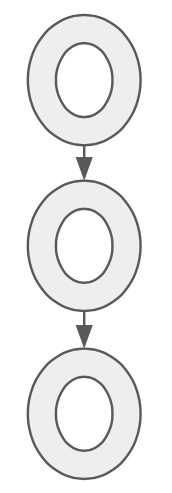
But this is not:
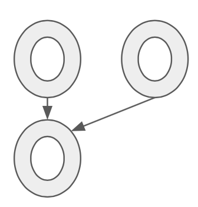
All the messages containing groups of headers are first split into segments before they are passed to the ProcessSegment function.
This makes processing algorithms simpler than they would have been if branching bundles needed to be considered.
The goal of adding more segments is to eventually construct a continous chain of headers starting from some pre-determined lowest point. This chain can be then verified (in the sense of Proof Of Work or Proof of Authority verification), and committed to the database. Once a chain of headers is committed to the database, the headers it contains may be evicted from memory to make space for more recent headers, and so on. Eventually, the heaviest existing header chain (also known as "canonical chain") is assembled from segments, verified, and committed to the database, and turbo-geth can move to the next stage (downloading block bodies).
Storing chain links in memory
Every chain link is represented by this structure:
type Link struct {
blockHeight uint64
header *types.Header
hash common.Hash // Hash of the header
next []*Link // Allows iteration over links in ascending block height order
persisted bool // Whether this link comes from the database record
preverified bool // Ancestor of pre-verified header
idx int // Index in the heap
}
Field blockHeight has block height (also known as block number), for faster comparisons when the chain link is used in
data structures like binary heap (extracting block height from the header.Number, which is *big.Int has non-trivial penalty,
apparently).
Field header is simply a pointer to the block header associated with this chain link. Field hash is a shorthand
for header.Hash(), because the latter may also involve some extra work.
Field next is essentially the reverse of the
header.ParentHash links and allows traversing the chain links from parents to children, which is necessary for some algorithms.
Field persisted is a flag that is set when a chain link gets committed into the database (persisted).
Field preverified
(it will probably be replaced by just verified soon) is a flag that is set for set of headers that are known to belong to the
canonical chain (i.e. they have been added to the chain and the probability of them being removed is very close to zero).
The hashes of such pre-verified headers are listed in the file turbo/stages/preverified_hashes_mainnet.go and similar (for other
network). Any header that is a parent of a pre-verified header, is considered to be pre-verified. Theoretically, it would be
enough to only specify one pre-verified header. But in practice, it makes sense to have a lot of them so that verification
does not require loading the entire header chain first.
Field idx has a very specific purpose. When chain link objects are placed into a priority queue (binary heap), it is useful
to remove elements not always from the head of the priority queue (top of the binary heap), but from any location. Implementation
of binary heap in Go allows that using function heap.Remove, which requires integer argument - position of the element in the
heap. Using idx field, the actual position of chain links within binary heap is tracked (it gets updated in the Swap function).
Priority queues for persisted and non-persisted chain links
Header download process only allows limited number of chain link in memory (by default 1048576). Currently, half of these "slots" are allocated to the persisted chain links, while another half - to the non-persisted chain links. In order to decide which chain links to evict when the slots become full, two priority queues are used - one for persisted chain links, another - for non-persisted chain links. The persisted links priority queue puts the link with the lowest block height on the top, therefore the "oldest" headers are getting cleaned up from memory first. The non-persisted link priority queue, on the other hand, puts the link with the highest block height on the top, therefore the "youngest" headers are getting clean up from memory first. The "youngest" headers that got removed, will need to be re-downloaded again. The idea about keeping "younger" persisted links and "older" non-persisted links is based on the observation that most processing is happening on the "boundary" between persisted and non-persisted chains.
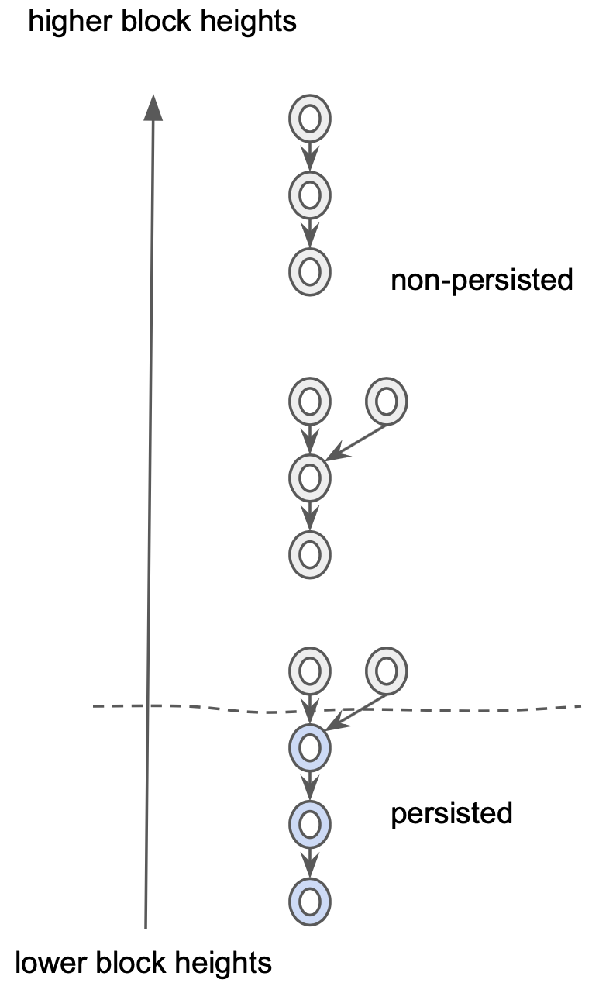
How new headers are queried from the peers?
In order to keep up the "supply" of new header segments downloaded from the network peers, the header download process regularly issues two types of queries to the peers:
- Skeleton query. It is implemented by
RequestSkeletonfunction in theturbo/stages/headerdownload/header_algos.gofile. Skeleton query takes advantage of theSkipattribute of theethprotocol messageGetBlockHeaders. IfSkipis set to zero, then the protocol message means querying block headers forming chain segement, i.e., they are following one another. IfSkipis not zero (in the case ofRequestSkeletonit is8*192=1536), the protocol message means querying headers separated by 1536 other headers from each other. For example, messageGetBlockHeaders{Number: 1000, Length: 5, Skip: 6}, queries headers with block heights1000,1006,1012,1018, 1024`. Note that skeleton queries are only generated when current number of non-persisted chain bundles (which is equal to number of anchors) is below certain threshold (currently 16). This is because processing an answer to a skeleton request would normally create up to 192 new anchors, and then it will take some time for the second type of queries (anchor extension queries) to fill the gaps and so reduce the number of anchors. - Anchor extension query. It is implemented by
RequestMoreHeadersfunction in theturbo/stages/headerdownload/header_algos.gofile. The function uses an auxiliary data structure,anchorQueueto decide which anchors to select for queries first. This structure,anchorQueueis a priority queue of anchors, priorities by the timestamp of latest anchor extension query issued for an anchor. Anchors for which the extension queries were not issued for the longest time, come on top. The anchor on top gets repeated query, but only after certain timeout (currently 5 second) since the last query, and only of the anchor still exists (i.e. it has not been extended yet). Also, if an anchor gets certain number of extension requests issued (currently 10), but without luck of being extended, that anchor gets invalidated, and all its descendants get deleted from consideration (invalidateAnchorfunction). This would happen if anchor was "fake", i.e. it corresponds to a header without existing ancestors.
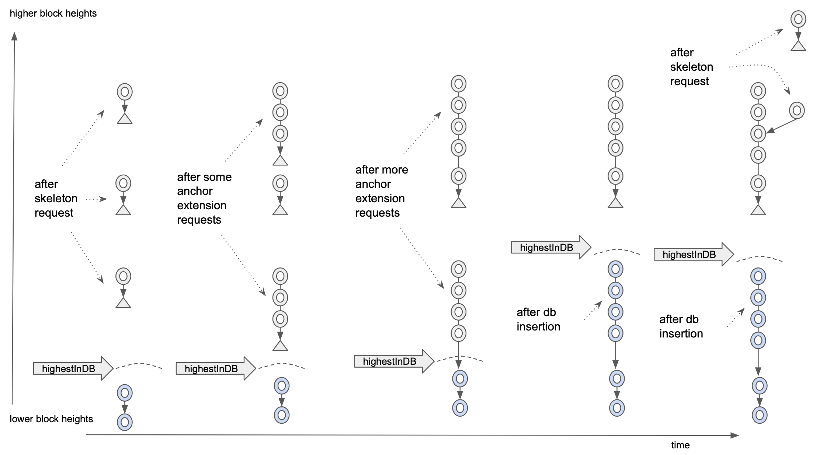
The picture above illustrates (in a simplified manner) how the two types of queries work together. Time line is from left to right,
block heights increase from bottom to top. We start with some persisted headers (in light blue). Then, a skeleton request is issued
(it always start with highestInDb block height to make sure we make progress even if some data get lost). When response from the
skeleton request is processed, we normally end up with multiple anchors attached to the single-header chain bundles. While there are
many anchors, more skeleton requests are not issued, until the number of anchors goes below certain threshold. At this time, only
anchor extension requests are issued, and the chain segments that arrive in response to those requests, cause the anchors to be
replaced by the segments (extending down), until some chain bundles merge, and, as a result, anchors disappear. If any bundle gets
connected to a persisted chain link (light blue), this allows the header insertions into the database (function InsertHeaders in
turbo/stages/headerdownload/header_algos.go file gets invoked periodically to check there are some non-persisted chain links
are connected to persisted links. After such insertion into the database, the highestInDb marker moves up. This means that the next
skeleton query will target higher block heights. On the far right in the picture, we see the results of the second skeleton query.
Although it does not usually happen, it is shown that the skeleton query returned the header on the same block height which is different
from what we had previously. This is normal occurrence, because we assume that the header chain can fork at any time, therefore
the data structures like chain bundles are used instead of simply chain segments. Eventually, the forked headers will also be persisted
into the database if all their ancestors are also persisted.
How chain segments received from the peers are added to the collection of chain bundles.
As mentioned previously, header download process maintains a collection of chain bundles in memory. That collection is "held" by
the fields links and anchors of the type HeaderDownload, declared in the file turbo/stages/headerdownload/header_data_struct.go.
Both of these fields are mappings from common.Hash to a Link pointer or to a Anchor pointer, respectively. As mentioned previously,
there are limits (to prevent memory exhaustion attacks) on the amount of chain links and anchors referenced by these mappings.
In order to enforce these limits, priority queues linkQeue, pesistentLinkQueue, and anchorQueue are used. The mappings themselves
are crucial in the processing of the new header segments received from the peers.
First of all, there is no guarantee that a message received from a peer, contains a chain segment. It may contain a collection of
disparate headers (for example, in a response to the skeleton query), or any branched chain bundle (if a peer decided to send an
unsolicited, but still useful bunch of headers). Therefore, any message received from a peer, needs to be split into chain segments.
This is the job of the SplitIntoSegments function in the turbo/stages/headerdownload/header_algos.go file. It takes a collection
of headers and return a collection of chain segments in a specific order. This order is the ascending order of the lowest block height
in the segment. If we attach segments in such order, we guarantee that we will reconstruct the entire chain bundle, if the message
prior to the splitting was a bundle, as demonstrated on the following illustration.
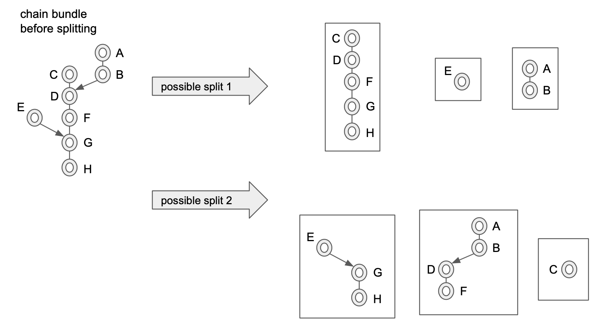
The illustration above also demonstrates that there may be many possible ways to split a chain bundle into segments. The function
SplitIntoSegments implements just one possibility, where the split in done in perhaps more segments that is strictly necessary,
but with the advantage of simpler algorithm.
Once segments are identified and ordered appropriately for the insertion, they are passed into ProcessSegment function, declared
in the turbo/stages/headerdownload/header_algos.go file. This function starts with attempting to find an attachment of the new
segment to an existing link, or an existing anchor, or both. This is the job of functions findLink and findAnchor.
Function findLink is trying, using the links mapping, to find the highest existing link that the new segment can be attached to.
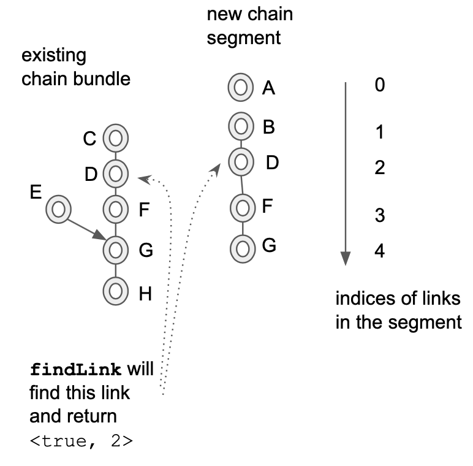
In the illustration above, it is assumed that the chain links marked by the same letters, for example, F and G, are identical,
and they have the same hash, and they can be found using links mapping by that hash. The illustration also demonstrates that it is
possible (and it is quite common) for the header download process to receive the same headers multiple times, like the headers
F and G in the example. This means, in this example, that only chain links A and B will be used to extend the existing
chain bundle, because F and G headers are already present.
Function findAnchor tries to finds (using anchors mapping) the lowest link the in the new segment that can be attached to an
existing anchor.
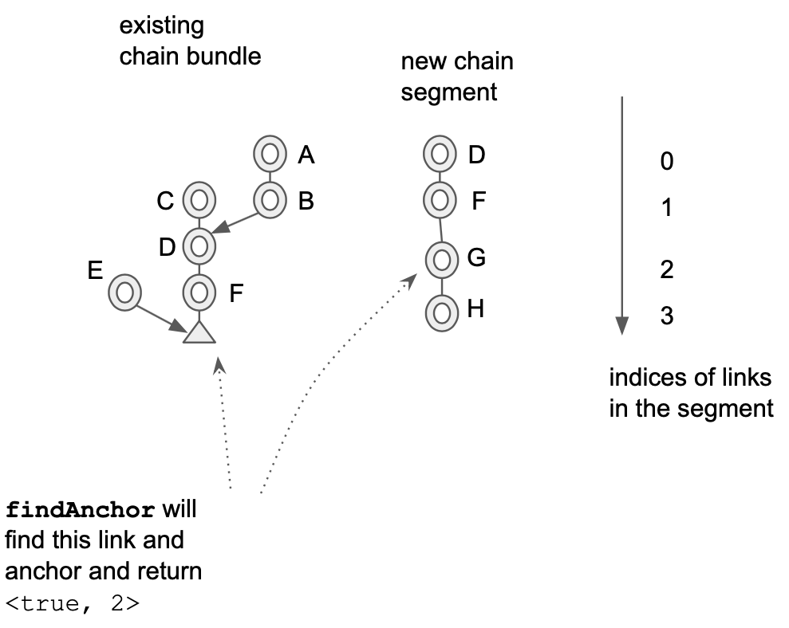
While findLink function finds the highest matching links in the existing bundles (via links mapping) and the new segment, the
findAnchor function finds a pair (anchor; link) where anchor's hash is equal to the links's header's hash.
Looking at the ProgressSegment function further, it can be seen that, depending on what findLink and findAnchor functions
return, there can be 6 cases, called connect, extendDown (handles two cases), extendUp, and newAnchor (also handles two cases). These cases are shown schematically on
the following illustration:
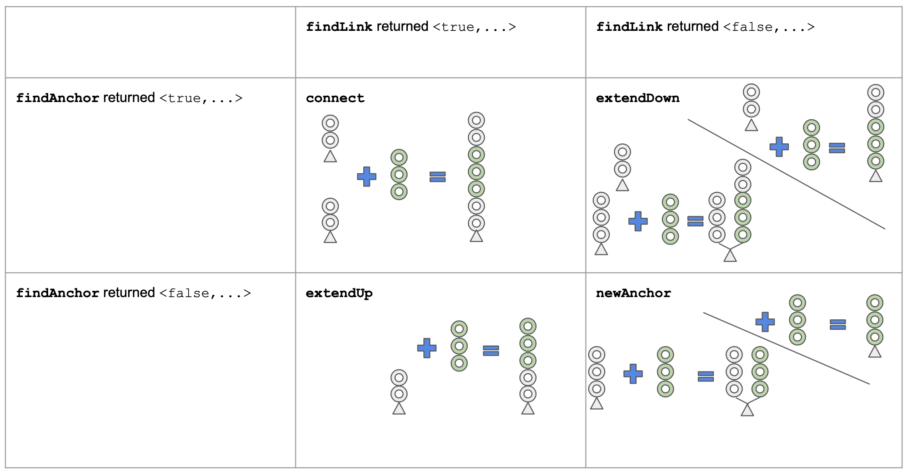
Note that the illustration assumes that the new chain segment is already "trimmed" correctly (meaning that the headers already
present are detected and removed) before applying one of these 4 functions. Such trimming is performed based on the second
return values from the functions findAnchor (returns start index for trimming) and findLink (returns end index for trimming).
As mentioned above, newAnchor function handles two distinct cases. In the first case, a new anchor is indeed created. In the
second case, the chain segment is attached to the existing anchor. It is distinct from extendUp case, where the new chain
segment is attached to a link, not to an anchor. The same applies to extendDown function. In one case it simply adds
more links to an anchor, effectively making anchor hang lower. In another case, it actually connects two anchors.
It would be more correct to have 6 functions covering 6 cases, but the necessary refactoring has not been performed yet.
Once the new segment is applied to the existing chain bundles, the rest of the ProcessSegment function is dedicated to
removing excessive non-persisted chain links (it makes sense because the beginning of ProcessSegment function is the only
place where the number of chain links stored in memory may grow). Recall that the priority queue used to evict non-persisted
chain links, linkQueue, puts the chain link with the highest block height on the top, to be evicted first. Whenever such
chain links is evicted, not only it is deleted from the links mapping, but also any other pointers to it need to be removed
from other data structures. Namely, the parent of this chain link may keep the pointer in its next field (consequently, the
next field of the parent gets adjusted), and the anchor that may be "hanging" on the link, may keep the pointer in its links
slice (that links slice allows walking from any anchor towards its chain links, for example, for the purpose of anchor invalidation).
How the headers get verified (according to PoW or PoA rules) before inserting into the database?
As mentioned earlier, every chain link has a boolean flag preverified, and this will likely be changed to simply verified soon.
Why? There are three ways in which a header can be verified:
- Pre-verification by hash. For headers that are ancestors (parent, parent of parent, etc.) of some headers that are known to be
contained in the canonical chain and will never be reorganised, no verification needs to be performed. For some public chains,
like main net, and some test nets, the list of such preverified headers is included into the source code of turbo-geth (it gets
updated before each release, this will be included in the
RELEASE_INSTRUCTIONS.mdin the future). - Pre-verification by preverified descendant. Once a new preveried header gets discovered (either by hash or by descendant), its
parent header also gets marked as preverified, and so on, until either the chain of links stops, or the marking encounters already
preverified header. This is implemented in the function
markPreverifiedin theturbo/stages/headerdownload/header_algos.gofile. This function is called from all 4 functions that apply new chain segment to the chain bundles (connect,extendDown,extendUp,newAnchor). That way, marking of the preverified headers does not require dedicated processing step. - Verification of headers beyond previously known canonical chain. Together with the "preverified hashes", source code is shipped
with a number, which is the block height of the last preverified header. Consequently, if a downloaded header has a higher block height,
it needs to be verified by the rules of PoW and PoA. Currently this happens as a part of insertion of the headers into the database.
However, soon this will change, and such verification will be applied as a separate processing step, setting up the
verifiedflags on the chain link objects. The reason why it needs to be performed as a separate processing step is that Consensus Engine separation project goes into the direction of asynchronous interaction between "Core" and "Consensus Engine". That means that requests for verification will be issued to the Consensus Engine, but they will be responded to asynchronously, and other things (like downloading more headers or inserting preceding headers into the database) should be allowed to happen in the meantime. This is whypreverifiedflag is likely to be generalised intoverifiedflag, when it happens.
How the headers get inserted into the database?
As mentioned earlier, chain links that have been inserted into the database (persisted) do not get immediately removed from memory,
but some number of them stays until evicted. One reason to keep some of them around is to make sure that any branching occurring from
the persisted links will be detected and processed correctly. Another reason to keep some of them around is that the persisted link
with the highest block height serve as initiators for further insertions. Since persisted chain links have their persisted flag on,
and non-persisted ones have their persisted flag off, the boundary between the values of this flag is used to determine when more
insertion into the database should occur.
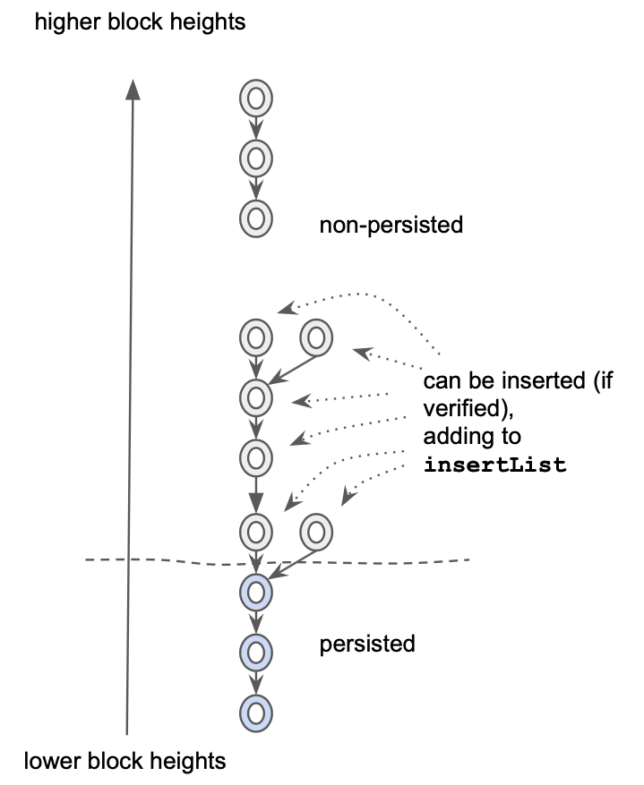
As shown in the illustration above, the chain links "eligible" for insertion are detected and added to the insertList, which is
a member field of the header download process object. How does this detection happen? One way would be to somehow keep the record
of the persisted chain links with the highest block height, and then periodically check if they become connected to some
non-persisted chain links. However, this would be inefficient. Instead, if we look at the table of 4 operations performed in
the ProcessSegment function, we can notice that only extendUp and connect operations can create a situation where
persisted link is connected to a non-persisted link. And this is where (in the functions extendUp and connect) the insertList gets modified.
What happens periodically is the call to the function InsertHeaders declared in the turbo/stages/headerdownload/header_algos.go file.
This function attempts the iteration over insertList. It only considers the chain links that have been pre-verified (if the are
below the preverifiedHeight) or otherwise it verifies them just before insertion. As mentioned earlier, this mechanism will change.
Very likely, there will be another function, let's say VerifyHeaders that will iterate over insertList and issue asynchronous
verification requests to the "Consensus Engine" for those headers that are not marked as verified. It is likely that chain links
will need an extra field, let's say verifyDeadline that would contain the time when the previously issued verification request
expires and a new one needs to be issued (to deal with potentially unreliable Consensus Engine). After such modification, the
InsertHeaders function will not perform the header verification itself, but instead will simply expect the verified flag to be
set for any header before it can get inserted into the database.
If the header is selected for insertion, it gets removed from the insertList, and it also needs to be moved from non-persisted
priority queue to persisted priority queue. This is where the idx member field is useful, because it allows invoking heap.Remove(hd.linkQueue, link.idx) to remove the chain link from the non-persisted priority queue regardless whether it is on the top or
not. Note that if there is an error with insertion, the chain link gets removed from the non-persisted priority queue, but does not
get added to the persisted priority queue. Perhaps it is a bug that it does not get removed from all data structures altogether.
The actual insertion of the headers into the database is delegated to the function hf that is passed into InsertHeaders as an argument.
This indirection exists for two reasons: to make InsertHeaders function smaller in size, and also to assist writing unit tests
that do not necessarily need to insert anything into the database, but can keep headers ephemerally or simply do nothing.
Since the InsertHeaders function is one of the two places where the number of persisted chain links can increase (another place is
RecordFromDb function that is called once in the very beginning of the whole downloading process to read the initial set of
persisted chan links from the database), at the end of this function there is code that enforces the limit on the persisted chain links
in memory. Because there are no anchors below the "persisted links" line, and also the persisted link priority queue evicts the oldest
links first, there is no need to adjust next fields on the parent links (parent links would have been evicted before children) or
links field of the anchors (there are no anchors there), as it was done when limiting non-persisted chain links.
In the non-testing settings, the role of hf function passed to InsertHeaders for the actual insertion into the database, is played
by the FeedHeader function of the HeaderInserter type (note it is different from HeaderDownload type that is used as a "receiver"
for most other functions described earlier). The job of this function is to insert one header at a time. An object of type
HeaderInserter has all the necessary context to perform this job. For example, its member field batch is effectively a database handle
with some buffering attached to it (also called "mutation" sometimes). First of all, function FeedHeader tries to establish
whether the newly presented header will affect what will be considered the "best header" (or in other words, "tip of the canonical chain").
This could happen either due to adding a child header to the parent which was the "best header" (most common occurrence), or due to
so-called reorg, where an alternative branch becomes the place of the "best header". Currently, this check for whether the new header will
be the best header, is done by comparing "total difficulties", which is the concept taken from EtHash consensus, and "shoehorned" into
Clique consensus (by declaring that "out-of-order" signed headers have difficulty 1, and "in-order" signed headers have difficulty 2).
With the separation of Consensus Engine, this will need to change. Instead of relying on the notion of total difficulty, the insertion
process will need to (asynchronously) ask the Consensus Engine to compare the existing "best header" with the new header to see if the new
one is better than the "best". Most likely it will lead to further decomposition of the FeedHeader function.
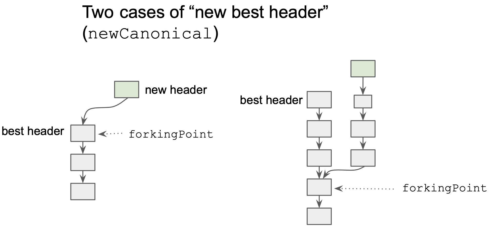
In the case if the new header is to become the best header, and important thing to calculate is so-called forkingPoint. On the illustration
above, two cases of replacing of the best header are shown. The first is a trivial one, when the chain simply grows, and in this case
the previous best header (parent of the new header) is the forkingPoint (although, technically, there is no forking). In the second case,
there is actual forking, and the forkingPoint is found by traversing the headers from the new header via ParentHash "pointers", until
a header currently belonging to the "best chain" (or in other words, "canonical chain") is found. The processing of this second case
can be seen in the code of the FeedHeader function as the loop over ancestor, ancestorHeight and ancestorHash. As expected, the
loop terminates upon the equality of the canonical hash of given height (ch) and the ancestorHash.
If the best header is getting replaced, a couple of special records in the database get updated: HeadHeaderHash (hash of the "best header"),
StageProcess(stages.Headers) - block number indicating how far the "Headers" stage has advanced. Also, unwindPoint member field of
the HeaderInserter is being updated, so that at the end of the inserting a group of block, the "deepest" forking point is known, and
this is where the unwinding of all stages will need to be performed.
Regardless of whether the best header is replaced or not, two other database records are updated - total difficulty of the new header (this is likely to be moved to the Consensus Engine in the future), and the mapping of hash of the new header to its RLP encoding.
Construction of the Headers Sync stage
Now most of the parts necessary for the construction of the Headers Sync stage have been described. The code of the Headers Sync stage
(not yet integrated into the default Staged Sync of turbo-geth, TODO will be posted further down) is in eth/stagedsync/stage_headers_new.go.
As usual, a definition of a sync stage consists of two functions. The first function is invoked when the sync is moving in forward direction,
i.e. when the block numbers are increasing. The second function is invoked only when there is unwinding (this is triggered when "best header"
is replaced by a new header, which is not the direct descendant of the "best header", as illustrated earlier). For the Headers Sync stage,
these two functions are HeadersForward and HeadersUnwind.